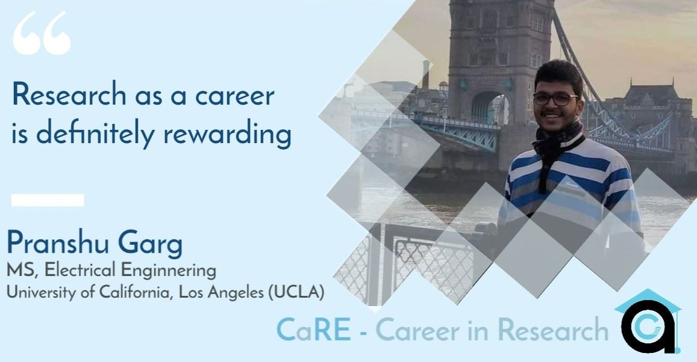

Here we share our conversation with Pranshu, who graduated from IIT Kanpur last year from Electrical Engineering and joined the University of California, Los Angeles (UCLA) to pursue an MS in Electrical and Computer Engineering. Even at IIT Kanpur, he had been involved in spreading awareness about academia, so read on and make sure to follow this blog and content as it could help you decide whether to pursue a career in Research. The University of California, Los Angeles (UCLA), is a public research university in Los Angeles. It became the Southern Branch of the University of California in 1919, making it the fourth-oldest (after UC Berkeley, UC San Francisco, and UC Davis) of the 10-campus University of California system.It offers 337 undergraduate and graduate degree programs in a wide range of disciplines.

How has been your experience at UCLA so far? How do you compare academics at IITK to UCLA?
My experience at UCLA had been great. The work culture here is very much different than IIT Kanpur. Here in UCLA the environment is very much inclusive despite the different communities prevailing here which was somewhat lacked in IIT Kanpur.But I must mention that the rigor of academics in IITK did help me in adjusting quite well with the culture of academics here at UCLA. My trait of being a social person helped me too.
How was the research exposure that you got in IITK?What persuaded you to continue your studies after your stay at IITK?
One was my SURGE project in summers in sophomore year and an undergraduate project in my fourth year.
It was the constant limitations that our professors put in our courses during undergraduation. Especially the professor of circuits was very good and intrigued me with the circuits that helped me develop a keen interest in it. These limitations instilled in me the curiosity to understand the field even better academically that too in a research environment than in industry which would me more conducive to my learning.
Where did you pursue your third year internship at IITK? How was your experience?
I went to Texas Instrumental and worked at Opam street which created General Purpose Amplifiers.
My professor had advised me to get a strong hold of two main fundamental concepts in field of circuitry that are feedback and noise and this internship held me build my foundation of the concept of feedback very well.
What was your experience in the admission procedure?
I think the most important thing is to start early. One should also start building a good network early like professors and alumni to have good guidance from the experienced people who have gone through the same phase before.
How much concern are finances related to higher education?
Finance is a crucial factor when you are thinking to pursue higher education in a foreign university. It is actually expensive to study internationally and also manage the living expenses. But TAships at these university are of great benefit to the students. The internship are also a good way to earn good amount of money.
Moreover the policies of public and private universities are different in giving funds to the students and in this case public universities surpass.
How did you see research as a career then? How has your mindset changed about it since you joined UCLA?
My perception was that it takes a lot of time to be successful in research and to be able to make money out of it. I still believe the same but research as a career is very rewarding.You earn a lot of respect and end up developing a lot of technologies by yourself. However I must add that even if one's pursuing an industrial career must do a masters else they’ll end up saturating their career sooner or later.
How do you see going for higher studies directly as a direct college graduate,to going after gaining some work experience?
It boils down to your personal preference. If you want to go in a research career then until you do your PhD, your industrial experience doesn’t really matter much. If you think you haven’t developed a good profile you can surely go for an industrial job and that will boost your profile.
What will you suggest to sophomores who will be sitting this year for internships, confused between research or industrial intern?
I would say the most important thing here is to play safe and sure. If you know that the industrial internship has a structured program with good mentors and projects, I would recommend going there. Only take a research internship if you are well aware of what is expected from you and whether it would help in your resume or not. Industry v/s academic intern doesn’t matter much if you apply for jobs or higher education. So just go with what is safe and would best help you out.